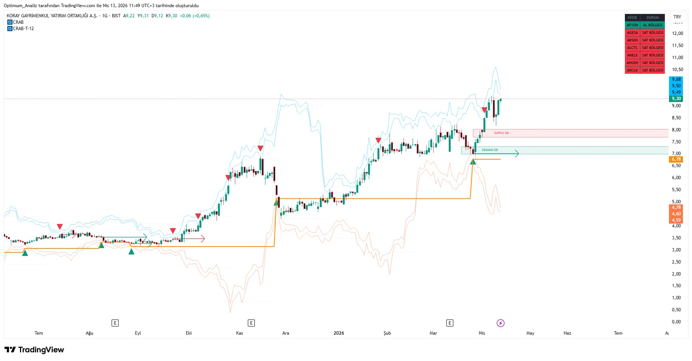
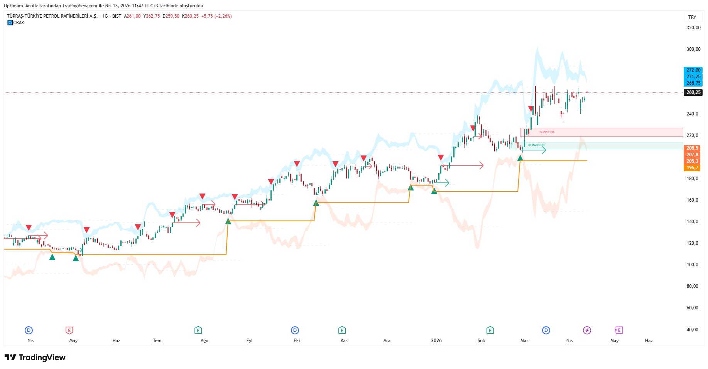

← Ana Sayfaya Dön
Genel Bakış
CRAB Sistem, dip ve tepe noktalarını yüksek doğrulukla tespit eden, ters korelasyon analizi yapan ve Demand & Supply bölgelerini belirleyen özel bir trading sistemidir.
Özellikle range piyasalarda ve güçlü dönüşlerde çok başarılı olan, 400+ tarama derinliğine sahip kapsamlı bir indikatördür.
Ana Özellikler
- 🔸 Gelişmiş Dip ve Tepe Bulucu
- 🔸 Ters Korelasyon Tespiti
- 🔸 Demand & Supply Zone Otomatik Çizimi
- 🔸 Güçlü ve Zayıf Zone Sınıflandırması
- 🔸 400+ Tarama Derinliği Desteği
- 🔸 Ayarlanabilir dip tepe bulucular
- 🔸 Vade sonu hesaplama
- 🔸 3 ayrı gelişmiş korelasyon görseli
Sistem Nasıl Çalışır?
1. Dip ve Tepe Tespiti
Sistem gelişmiş pivot algoritmaları kullanarak piyasadaki önemli dip ve tepe noktalarını tespit eder. Bu noktalar gelecekteki destek ve direnç seviyeleri olarak kullanılır.
2. Demand & Supply Zone
Fiyatın güçlü tepki verdiği bölgeleri otomatik olarak kutu şeklinde çizer. Zone’ların gücünü hacim ve fiyat davranışı ile ölçer.
3. Ters Korelasyon (Divergence)
Fiyat yeni dip/tepe yaparken indikatörlerin ters hareket etmesini tespit eder ve potansiyel dönüş sinyallerini vurgular.
CRAB Sistem’in Güçlü Yönleri:
• Range piyasalarda ve dönüşlerde yüksek performans
• Demand & Supply zone’ları otomatik ve net gösterir
• 400+ tarama ile geniş market tarama yeteneği
• Ters korelasyon ile erken dönüş sinyalleri
• Zone gücü analizi ile risk yönetimi desteği
CRAB Demand & Supply Zone Örneği

CRAB Sistem - Otomatik Demand & Supply Zone Tespiti
CRAB Dip & Tepe Bulucu Örneği

CRAB Sistem - Dip ve Tepe Bulucu ile Ters Korelasyon Örneği
Kullanım Önerileri
- En iyi performans 1 Saat, 2 Saat, 3Saat,4 Saat ve Günlük grafiklerde alınır.
- Demand zone’larda alım, Supply zone’larda satım stratejisi uygulanabilir.
- Zone içinde retest bekleyerek daha güvenli girişler yapılabilir.
- Güçlü zone’larda (kalın kutular) pozisyon büyüklüğünü artırabilirsiniz.
- Diğer indikatörlerle (GOLDR veya PULSE) birlikte kullanmak performansı artırır.
Erişim Bilgisi
Bu indikatör invite-only olarak TradingView platformunda yayınlanmaktadır.
Erişim talebi için:
@Optimum__Trader